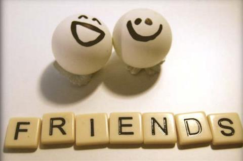
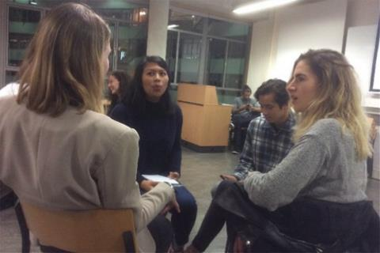
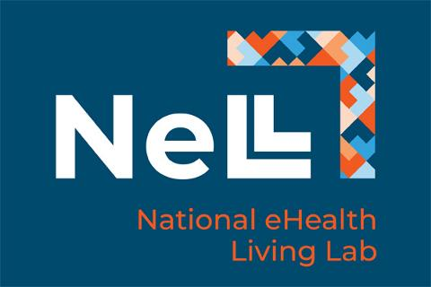
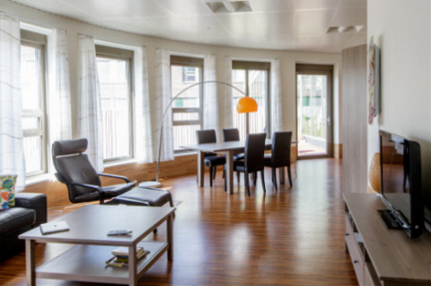
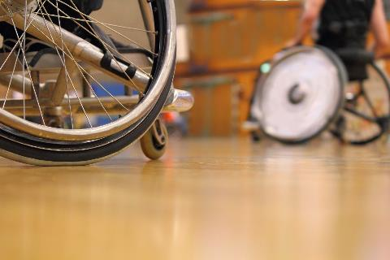

|  |
Evaluatie Friends@PiramideCollege 2018 |
Leerlingen van het Piramide College werken samen met studenten van de Hagse Hogeschool als maatjes aan leerdoelen van de leerlingen. Ze doen dit in het schoolgebouw van het Piramide College en worden uitgedaagd door de studenten om grenzen te verleggen.
Lees meer...|  |
Start "Friends" |
In De HHs startte een groep van 25 studenten in ‘Friends’: een 'peer assisted support project’ van het lectoraat Revalidatie. In Friends werk je aan eigen talenten en verbeterpunten.
Lees meer...|  |
Samenwerking met het National eHealth Living Lab |
In maart dit jaar is het National eHealth Living Lab (NeLL) geopend in Leiden: hét open, onafhankelijke platform voor eHealth. Binnen NeLL worden alle activiteiten, projecten en initiatieven op het gebeid van eHealth bij elkaar gebracht. Experts onderzoeken onder andere in hoeverre de toepassingen
Lees meer...|  |
Samenwerking met het National eHealth Living Lab |
In maart dit jaar is het National eHealth Living Lab (NeLL) geopend in Leiden: hét open, onafhankelijke platform voor eHealth. Binnen NeLL worden alle activiteiten, projecten en initiatieven op het gebeid van eHealth bij elkaar gebracht. Experts onderzoeken onder andere in hoeverre de toepassingen
Lees meer...|  |
Onderzoek naar e-health in curriculum HHs |
FAST@HOME wil achterhalen hoe HHS-studenten beter kunnen worden opgeleid voor toepassing van eHealth in hun toekomstige beroep Martijn van der Ent (docent BT, kenniskringlid lectoraat Revalidatie) en Manon Wentink (onderzoeker) starten binnenkort met
Lees meer...